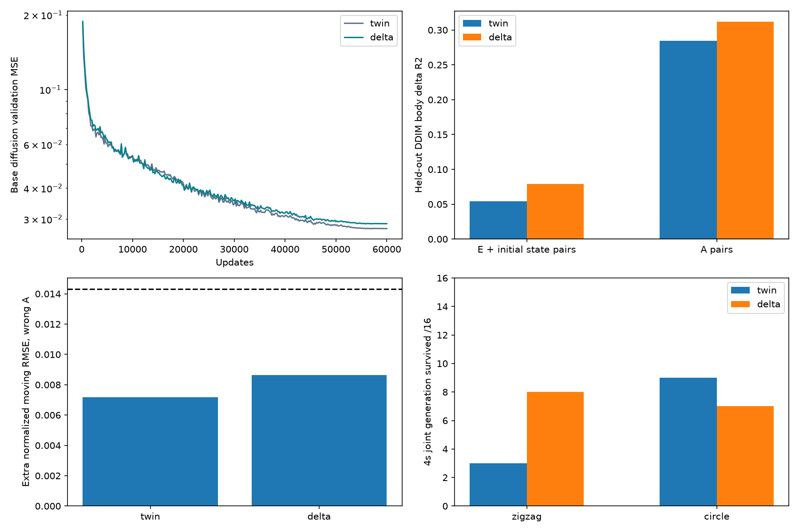

[판정] 사전 기준 일부 미달. 추가 손실이 없는 twin과 있는 delta를 같은 kp30 데이터·기본 학습 조건에서 비교했음. 실제 task의 진행 방향·낙상도 별도로 확인해야 하며, 양수 R²나 생존만으로 task 성공이라고 보지 않음.
[구성] 16형상·48파일·22,272 에피소드. 두 모델의 구조·정규화·검증분할·학습seed0·60,000update·기본조건비율1/2/4=20/40/40은 같음. delta에만 같은 잡음을 준 E/A쌍의 몸통14개 값 변화 차이 손실을 계수1로 추가했음. v13의 실제 손실 20% 고정은 이번 실험에 사용하지 않음. E쌍은 같은 행동에서 형상과 해당 초기 상태가 달라지고, A쌍은 같은 실제 초기 상태·형상에서 행동만 달라짐.
[구현 확인] 기본 학습 난수와 추가 쌍 난수를 분리했음. 두 모델의 검증 분할·정규화가 같고, 300개 기록의 조건·출처 샘플링 카운터도 일치함. 학습·검증 쌍 누수 방지, 입력 및 코드 해시, 모델 수치 검증을 통과했음. 평가를 나눠 계산하는 경계와 무관하게 같은 쌍은 초기 잡음을 공유함.
문서 8-49의 동일 행동 물리쌍 516개를 사용해 부호를 판정했음. 서로 다른 생성 행동을 사용한 고정 형상 task의 평균 부호는 보조 지표로 구분함. 비교 대상은 delta 대 twin임. twin 보고서의 v12(kp200) 참조는 원인 비교로 사용하지 않음.
| 기준 | 대조군/참조 | 추가손실모델/비율 | 판정 |
|---|---|---|---|
| 행동을 틀리게 줬을 때 속도 예측 오차 증가 | 0.0072 | 0.0086 | 미달 |
| 동일 행동 516쌍 전진 변화 부호 | held_516: 0.7345 | held_516: 0.6860 | 미달 |
| 공동 생성 생존 유지 | zigzag: 3 / circle: 9 | zigzag: 8 / circle: 7 | 미달 |
| 별도 생성한 E/A쌍 몸통 변화량 설명 | E: 0.0540 / A: 0.2848 | E: 0.0793 / A: 0.3117 | 통과 |
| 기존 Mode2 평가 움직임 오차 악화 10% 이내 | 대조군의 1.0배 | height: 0.9385 / tilt: 0.9375 / linvel: 0.9795 | 통과 |
[조건 구분] 사전 퇴보 방지 기준은 기존 Mode2 평가(행동과 상태를 함께 생성하는 조건에서 행동을 고정)의 오차임. 이 기준은 통과했음. 별도 Mode1 평가(행동을 알려 주고 상태를 예측)에서는 높이·기울기·속도 오차가 각각 58.3%·71.0%·55.3% 증가했음. 이 비교는 post-hoc로 별도 기록했으며 사전 기준을 바꾸지 않았음.
R²는 실제 움직임의 차이를 얼마나 설명하는지 나타냄. 0보다 크면 평균 변화만 예측하는 것보다 낫지만, 추가 손실의 효과는 twin 수치와 함께 봐야 함. 학습 중 단일 잡음 단계의 모니터는 이미 잡음이 섞인 실제 미래를 입력받으므로 최종 DDIM 생성 평가와 다름. 몸통 14채널에는 서로 다른 물리 단위가 섞여 있어 위치·높이·속도도 분리해 기록함.
| 모델/개입 | 검증쌍 | 몸통전체R² | 위치R² | 높이R² | 속도R² |
|---|---|---|---|---|---|
| twin · E | 1024 | 0.0540 | 0.1825 | 0.7188 | 0.0621 |
| twin · A | 688 | 0.2848 | 0.2632 | 0.4965 | 0.2138 |
| delta · E | 1024 | 0.0793 | 0.3533 | 0.6632 | 0.1184 |
| delta · A | 688 | 0.3117 | 0.3350 | 0.4686 | 0.2519 |

지그재그 진행 단위는 m, 원형은 바퀴(laps)임. 진행 중앙값은 유한한 실제 후보 전체를 기준으로 계산했음. 자세·행동·형상·영상은 각 실험 보고서에 있음.
| 조건 | 생존 | 진행중앙값 | 보상중앙값 |
|---|---|---|---|
| twin · zigzag | 3/16 | -0.1587 m | -2.4297 |
| twin · circle | 9/16 | -0.0090 laps | -0.9961 |
| delta · zigzag | 8/16 | -0.2004 m | -1.8610 |
| delta · circle | 7/16 | -0.0446 laps | -1.2263 |
학습 seed는 하나임. E쌍은 형상과 초기 상태가 함께 달라지므로 E 토큰만의 독립적인 인과 효과를 입증하지 않음. delta는 추가 Mode1 감독과 계산량도 늘어나므로 같은 계산량의 추가 복원 대조군과 비교한 실험은 아님. 두 모델의 합산 학습 손실은 항목 수가 달라 직접 비교하지 않고, 같은 기본 검증 오차를 그래프로 보였음.
twin 전체평가·영상 / delta 전체평가·영상 / 전체결과·검증 / 평가전기록·수정사항 / 쌍원본검증 / 재현명령 / 생성 경로 점검